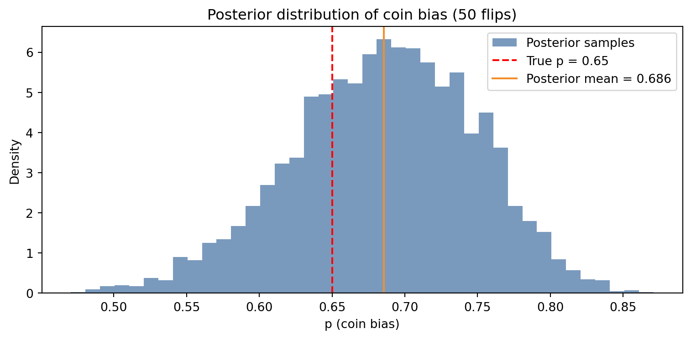

Understand the role of priors, likelihoods, and posteriors in Bayesian modeling
Work with conjugate prior families and understand why they simplify computation
Gain a conceptual understanding of Markov Chain Monte Carlo (MCMC)
Build and interpret a simple Bayesian model using PyMC
3.1 Prior, Likelihood, Posterior
In Chapter 2 we saw Bayes’ theorem as an equation. In this chapter, we use it as a workflow.
Every Bayesian analysis has three ingredients. The prior encodes what you believe before you see data — perhaps weakly (a flat distribution that spreads probability evenly) or strongly (a narrow distribution centered on an expert estimate). The likelihood encodes how the data-generating process works: if the true parameter is \(\theta\), how probable is the data we actually observed? The posterior is the product of these two, normalized to integrate to one.
The posterior is not a point estimate. It is a full probability distribution — a complete picture of your uncertainty about the parameter after seeing the data. This is more information than a single number with error bars, and in many problems it is exactly what you need.
3.2 Conjugate Priors
For certain likelihood functions, there exists a prior family that yields a posterior in the same family. These are called conjugate priors, and they are deeply convenient: the update rule has a closed form.
The Beta-Binomial pair is the classic example. If your prior on a coin’s bias \(\theta\) is \(\text{Beta}(\alpha, \beta)\), and you observe \(h\) heads and \(t\) tails, your posterior is \(\text{Beta}(\alpha + h, \beta + t)\). Each head increments \(\alpha\) by one; each tail increments \(\beta\) by one. The parameters accumulate evidence like a ledger.
Other useful conjugate pairs: - Normal likelihood with Normal prior → Normal posterior (known variance) - Poisson likelihood with Gamma prior → Gamma posterior - Multinomial likelihood with Dirichlet prior → Dirichlet posterior
Beyond these, closed-form posteriors rarely exist. For real-world models — hierarchical structures, non-linear relationships, mixed observations — we need a different approach.
3.3 Markov Chain Monte Carlo
When the posterior has no closed form, we approximate it by drawing samples. If we can generate a large number of samples \(\{\theta_1, \theta_2, \ldots, \theta_N\}\) that are distributed according to the posterior, we can estimate any quantity of interest — mean, median, credible interval — from those samples directly.
The challenge: we cannot sample from the posterior directly (we don’t know its normalizing constant). Markov Chain Monte Carlo (MCMC) is an elegant workaround. It constructs a Markov chain — a random walk through parameter space — whose stationary distribution is the posterior. If you run the chain long enough, the samples it produces are, effectively, draws from the posterior.
The intuition is a hiker in a mountainous landscape: the hiker moves randomly but tends to stay near high ground. Given enough time, the proportion of time spent at any location reflects the height of the terrain there. The terrain is the posterior probability density.
Modern MCMC algorithms (No-U-Turn Sampler, Hamiltonian Monte Carlo) are far more efficient than the original random walks, which is why Bayesian computation that was impractical in 1990 is routine today.
3.4 PyMC: Hands-On
PyMC is a Python library for probabilistic programming. You describe your model — the prior and the likelihood — and PyMC handles the MCMC automatically.
Code
import numpy as npimport pymc as pmimport matplotlib.pyplot as pltrng = np.random.default_rng(7)true_p =0.65observed = rng.binomial(1, true_p, 50) # 50 coin flipswith pm.Model() as coin_model:# Prior: weakly informative — we expect a fair-ish coin p = pm.Beta("p", alpha=2, beta=2)# Likelihood: each flip is Bernoulli with bias p obs = pm.Bernoulli("obs", p=p, observed=observed)# Sample from the posterior trace = pm.sample(1000, tune=500, progressbar=False, random_seed=42)posterior_samples = trace.posterior["p"].values.flatten()fig, ax = plt.subplots(figsize=(8, 4))ax.hist(posterior_samples, bins=40, density=True, color="#4e79a7", alpha=0.75, label="Posterior samples")ax.axvline(true_p, color="red", linestyle="--", linewidth=1.5, label=f"True p = {true_p}")ax.axvline(posterior_samples.mean(), color="#f28e2b", linestyle="-", linewidth=1.5, label=f"Posterior mean = {posterior_samples.mean():.3f}")ax.set_xlabel("p (coin bias)")ax.set_ylabel("Density")ax.set_title("Posterior distribution of coin bias (50 flips)")ax.legend()plt.tight_layout()plt.show()

Figure 3.1: Posterior distribution of a coin’s bias, estimated by MCMC. The true value (0.65) falls well within the 94% credible interval.
3.5 Summary
Bayesian inference proceeds in three steps: specify a prior, specify a likelihood, condition on observed data to get the posterior.
Conjugate priors give closed-form posteriors for specific likelihood families; the Beta-Binomial pair is the most commonly encountered.
MCMC generates samples from the posterior when no closed form exists; modern implementations (HMC, NUTS) are efficient enough for practical use.
PyMC provides a high-level interface for building probabilistic models; the user specifies structure, the library handles computation.
3.6 Further Reading
Gelman et al. (2013) is the standard reference for applied Bayesian analysis. The PyMC documentation includes a rich set of worked examples. For the philosophy behind prior choice, Gelman’s blog (Statistical Modeling, Causal Inference, and Social Science) is worth bookmarking.
Gelman, Andrew, John B. Carlin, Hal S. Stern, David B. Dunson, Aki Vehtari, and Donald B. Rubin. 2013. Bayesian Data Analysis. 3rd ed. CRC Press.
Source Code
---title: "Bayesian Inference in Practice"---::: {.callout-note icon=false}## Learning Objectives- Understand the role of priors, likelihoods, and posteriors in Bayesian modeling- Work with conjugate prior families and understand why they simplify computation- Gain a conceptual understanding of Markov Chain Monte Carlo (MCMC)- Build and interpret a simple Bayesian model using PyMC:::## Prior, Likelihood, PosteriorIn Chapter 2 we saw Bayes' theorem as an equation. In this chapter, we use it as a workflow.Every Bayesian analysis has three ingredients. The **prior** encodes what you believe before you see data — perhaps weakly (a flat distribution that spreads probability evenly) or strongly (a narrow distribution centered on an expert estimate). The **likelihood** encodes how the data-generating process works: if the true parameter is $\theta$, how probable is the data we actually observed? The **posterior** is the product of these two, normalized to integrate to one.The posterior is not a point estimate. It is a full probability distribution — a complete picture of your uncertainty about the parameter after seeing the data. This is more information than a single number with error bars, and in many problems it is exactly what you need.## Conjugate PriorsFor certain likelihood functions, there exists a prior family that yields a posterior in the same family. These are called **conjugate priors**, and they are deeply convenient: the update rule has a closed form.The Beta-Binomial pair is the classic example. If your prior on a coin's bias $\theta$ is $\text{Beta}(\alpha, \beta)$, and you observe $h$ heads and $t$ tails, your posterior is $\text{Beta}(\alpha + h, \beta + t)$. Each head increments $\alpha$ by one; each tail increments $\beta$ by one. The parameters accumulate evidence like a ledger.Other useful conjugate pairs:- Normal likelihood with Normal prior → Normal posterior (known variance)- Poisson likelihood with Gamma prior → Gamma posterior- Multinomial likelihood with Dirichlet prior → Dirichlet posteriorBeyond these, closed-form posteriors rarely exist. For real-world models — hierarchical structures, non-linear relationships, mixed observations — we need a different approach.## Markov Chain Monte CarloWhen the posterior has no closed form, we approximate it by drawing samples. If we can generate a large number of samples $\{\theta_1, \theta_2, \ldots, \theta_N\}$ that are distributed according to the posterior, we can estimate any quantity of interest — mean, median, credible interval — from those samples directly.The challenge: we cannot sample from the posterior directly (we don't know its normalizing constant). Markov Chain Monte Carlo (MCMC) is an elegant workaround. It constructs a Markov chain — a random walk through parameter space — whose stationary distribution is the posterior. If you run the chain long enough, the samples it produces are, effectively, draws from the posterior.The intuition is a hiker in a mountainous landscape: the hiker moves randomly but tends to stay near high ground. Given enough time, the proportion of time spent at any location reflects the height of the terrain there. The *terrain* is the posterior probability density.Modern MCMC algorithms (No-U-Turn Sampler, Hamiltonian Monte Carlo) are far more efficient than the original random walks, which is why Bayesian computation that was impractical in 1990 is routine today.## PyMC: Hands-OnPyMC is a Python library for probabilistic programming. You describe your model — the prior and the likelihood — and PyMC handles the MCMC automatically.```{python}#| label: fig-pymc-demo#| fig-cap: "Posterior distribution of a coin's bias, estimated by MCMC. The true value (0.65) falls well within the 94% credible interval."import numpy as npimport pymc as pmimport matplotlib.pyplot as pltrng = np.random.default_rng(7)true_p =0.65observed = rng.binomial(1, true_p, 50) # 50 coin flipswith pm.Model() as coin_model:# Prior: weakly informative — we expect a fair-ish coin p = pm.Beta("p", alpha=2, beta=2)# Likelihood: each flip is Bernoulli with bias p obs = pm.Bernoulli("obs", p=p, observed=observed)# Sample from the posterior trace = pm.sample(1000, tune=500, progressbar=False, random_seed=42)posterior_samples = trace.posterior["p"].values.flatten()fig, ax = plt.subplots(figsize=(8, 4))ax.hist(posterior_samples, bins=40, density=True, color="#4e79a7", alpha=0.75, label="Posterior samples")ax.axvline(true_p, color="red", linestyle="--", linewidth=1.5, label=f"True p = {true_p}")ax.axvline(posterior_samples.mean(), color="#f28e2b", linestyle="-", linewidth=1.5, label=f"Posterior mean = {posterior_samples.mean():.3f}")ax.set_xlabel("p (coin bias)")ax.set_ylabel("Density")ax.set_title("Posterior distribution of coin bias (50 flips)")ax.legend()plt.tight_layout()plt.show()```## Summary- Bayesian inference proceeds in three steps: specify a prior, specify a likelihood, condition on observed data to get the posterior.- Conjugate priors give closed-form posteriors for specific likelihood families; the Beta-Binomial pair is the most commonly encountered.- MCMC generates samples from the posterior when no closed form exists; modern implementations (HMC, NUTS) are efficient enough for practical use.- PyMC provides a high-level interface for building probabilistic models; the user specifies structure, the library handles computation.## Further Reading@gelman2013bayesian is the standard reference for applied Bayesian analysis. The PyMC documentation includes a rich set of worked examples. For the philosophy behind prior choice, Gelman's blog (*Statistical Modeling, Causal Inference, and Social Science*) is worth bookmarking.